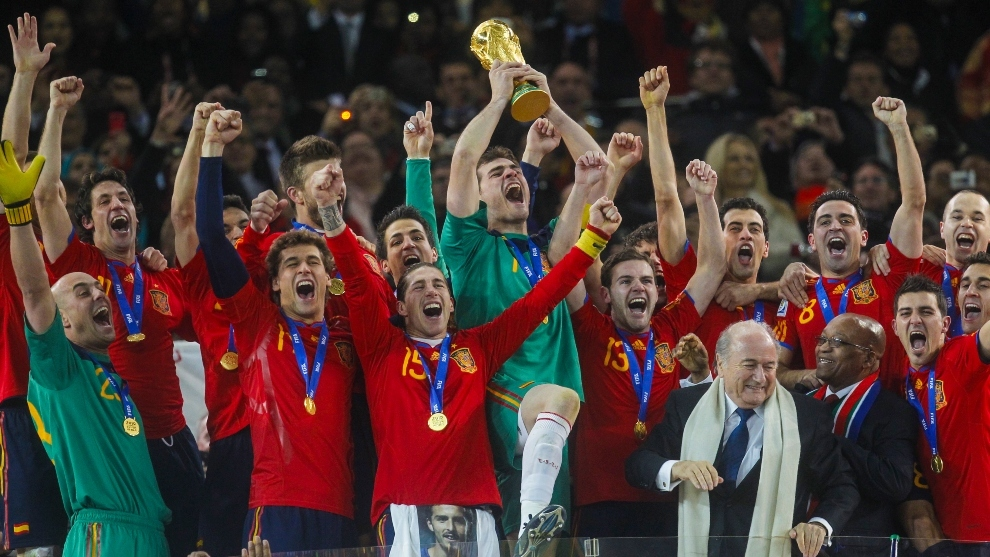

España gana el mundial de Sudáfrica
MUNDIAL 2010 | ESPAÑA, CAMPEONA DEL MUNDO
Johannesburgo ha sido el lugar en el que España ha visto cumplido su sueño de convertirse en campeona del mundo. Buenos jugadores como Iniesta, cuyo gol cuando la final parecía abocada a los penaltis. Y un buen equipo como el que no se arredró cuando Holanda sacó el manual del juego sucio para hacer frente al tiquitaca, sin embargo, la historia la escriben los valientes.
Alineación
Portero: Casillas Defensas: Ramos, Piqué Puyol, Capdevila Centrocampistas: Xabi Alonso, Busquets, Xavi Delanteros: Iniesta, Villa, Pedro
Sustituciones
'Min 60' Sale Pedro Entra Jesús Navas 'Min 87' Sale Xabi Alonso Entra Fàbregas 'Min 106' Sale Villa Entra Torres
